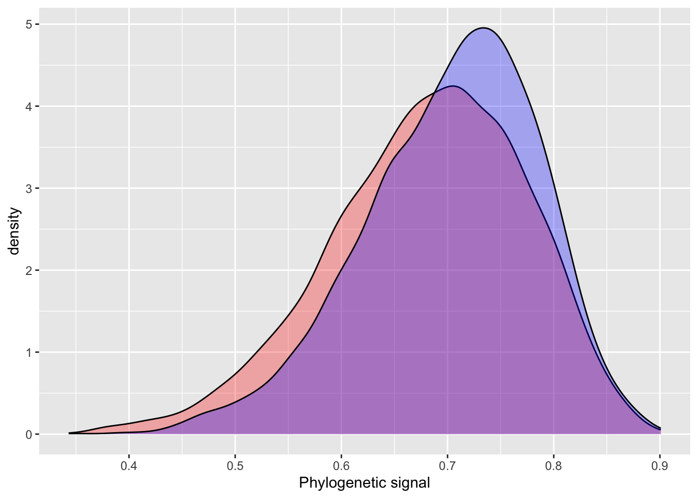
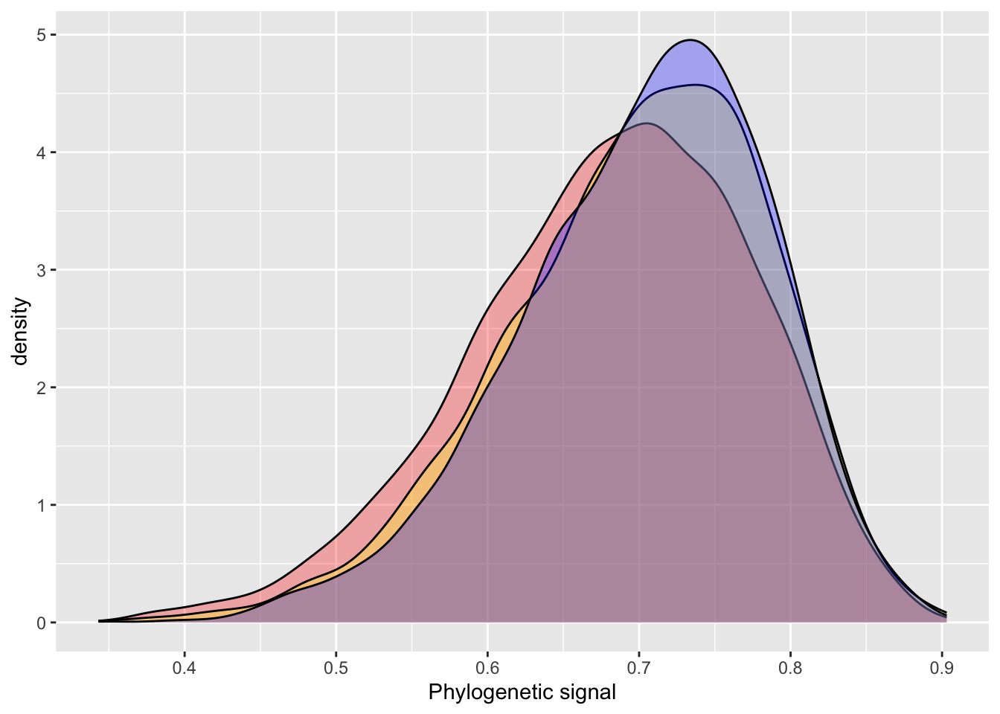
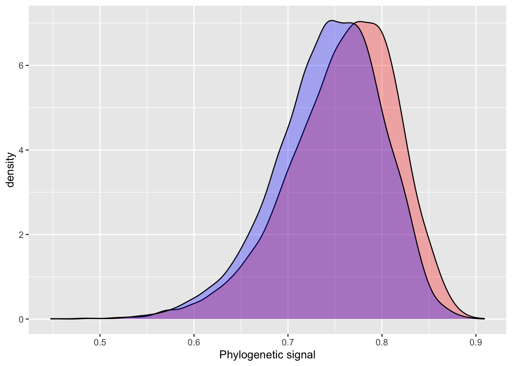

library(INLA)
library(brms)
library(ape)
library(ggplot2)
library(tidyr)
phylo <- ape::read.nexus("https://paul-buerkner.github.io/data/phylo.nex")
data_simple <- read.table(
"https://paul-buerkner.github.io/data/data_simple.txt",
header = TRUE
)Phylogenetic Signal in INLA
Phylogenetic signal in INLA
Recently, my research has been focused on quantifying the patterns of similarity we observe within a particular linguistic or cultural trait, also known as autocorrelation. In anthropology some people call this ‘Galton’s Problem’ but I have outlined why I prefer the term autocorrelation here. A helpful way to remember what autocorrelation means is that the auto is used to mean self (as it is in autobiography). So autocorrelation really just means self-correlation.
For the most part, I have been using Gaussian Process models to quantify autocorrelational effects of phylogenies of linguistic and cultural data, and have been building upwards from the BRMS phylogenetic multilevel model example provided by Paul Bürkner. This example shows us how to estimate the amount of phylogenetic signal, specifically Pagel’s Lambda, within a Bayesian multilevel model. Paul offers a number of different situations, but I am particularly interested in the simple and repeated-measures model.
BRMS is an excellent package for building these models, but an alternative I have started using is INLA, under the guidance of Russell Dinnage. To ensure I understand the dynamics of this new modelling environment, Russell helped me replicated Paul Bürkner’s example in INLA.
The goal here is to replicate Paul’s analyses within the INLA framework. Here is the introduction from Paul’s vignette:
In the present vignette, we want to discuss how to specify phylogenetic multilevel models using brms. These models are relevant in evolutionary biology when data of many species are analyzed at the same time. The usual approach would be to model species as a grouping factor in a multilevel model and estimate varying intercepts (and possibly also varying slopes) over species. However, species are not independent as they come from the same phylogenetic tree and we thus have to adjust our model to incorporate this dependency. The examples discussed here are from chapter 11 of the book Modern Phylogenetic Comparative Methods and the application in Evolutionary Biology (de Villemeruil & Nakagawa, 2014). The necessary data can be downloaded from the corresponding website (https://www.mpcm-evolution.com/). Some of these models may take a few minutes to fit.
A Simple Phylogenetic Model
Assume we have measurements of a phenotype, phen (say the body size), and a cofactor variable (say the temperature of the environment). We prepare the data using the following code.
We are going to use the same data as Paul, so we can compare outcomes:
To model the relationships between societies BRMS requires a covariance matrix, but INLA uses precision matrices. So, where BRMS uses ape::vcv.phylo to build a covariance matrix, we instead used MCMCglmm::inverseA to get a precision matrix of the phylogeny.
INLA also requires that we identify the relationship between the precision matrix and data frame using numerical indices, rather than character names, as in BRMS. To get the indices you can use the match function.
# INLA Precision matrix
phylo_prec_mat = MCMCglmm::inverseA(phylo,
nodes = "TIPS",
scale = TRUE)$Ainv
# matching with numerical indicies
data_simple$phylo_id = match(data_simple$phylo, rownames(phylo_prec_mat))
# BRMS Covariance matrix
A <- ape::vcv.phylo(phylo)With the precision matrix built and data lined up we can build the model using the default prior settings for INLA. Beneath the INLA model, I show the BRMS code for comparison.
# INLA model
model_simple_inla = inla(phen ~ cofactor +
f(phylo_id,
model = "generic0",
Cmatrix = phylo_prec_mat),
family = "gaussian",
data = data_simple)
# BRMS Model
model_simple_brms <- brm(
phen ~ cofactor + (1|gr(phylo, cov = A)),
data = data_simple,
family = gaussian(),
data2 = list(A = A),
prior = c(
prior(normal(0, 10), "b"),
prior(normal(0, 50), "Intercept"),
prior(student_t(3, 0, 20), "sd"),
prior(student_t(3, 0, 20), "sigma")
)
)INLA and BRMS have similar model grammars, but there are important differences. Both approaches use the standard model formula for response and fixed effects: y ~ x. The primary difference in model grammar between BRMS and INLA comes with the specification of random effects, so it worth spending some time comparing the two. INLA specifies random effects using f, which is short for function. f has three inputs in the above model. First is the numerical indices variable indicating which taxa is assigned to which row of the input data. By offering a single categorical variable to f, we are building a model with random intercepts, mimicing the BRMS model. Next is the model argument. There are 50 model possibilities which define how the precision estimates are calculated (see names(inla.models()$latent) for all models). For the replication of the BRMS example, we use the generic0 model. generic0 which applies one parameter $\tau$ to the precision matrix and is the model I have used most for autocorrelational models. Although it is worthwhile to look through the list of possibilities to see if any other model might better suit your purposes. The final argument in f is Cmatrix, which is where the precision matrix goes.
After looking at f we can look at the remaining arguments to the inla function: family, and data. family works like many other R statistical modelling packages, and specifies the distribution you want to use for your model. Here, we are using gaussian, but INLA can handle most common distributions, like binomial or poisson. data should again be familiar, this takes the data to be used in the model. data works much like many other modelling inputs, and is where the fixed effect data comes from for your model.
summary(model_simple_inla)Time used:
Pre = 2.07, Running = 0.63, Post = 0.0492, Total = 2.75
Fixed effects:
mean sd 0.025quant 0.5quant 0.975quant mode kld
(Intercept) 39.766 6.860 26.273 39.741 53.381 39.739 0
cofactor 5.178 0.137 4.911 5.178 5.446 5.178 0
Random effects:
Name Model
phylo_id Generic0 model
Model hyperparameters:
mean sd 0.025quant 0.5quant
Precision for the Gaussian observations 0.012 0.002 0.009 0.012
Precision for phylo_id 0.006 0.002 0.003 0.005
0.975quant mode
Precision for the Gaussian observations 0.016 0.012
Precision for phylo_id 0.010 0.005
Marginal log-Likelihood: -1008.86
is computed
Posterior summaries for the linear predictor and the fitted values are computed
(Posterior marginals needs also 'control.compute=list(return.marginals.predictor=TRUE)')INLA prints two main areas of output we are interested in: Fixed effects (titled Populations-Level Effects in BRMS output) and Model hyperparameters (Group-Level Effects). The hyperparameters for random effects in INLA are precision estimates, as opposed to variance estimates in BRMS. So, they are not directly comparable. Fortunately, precision estimates are easily converted to the more intuitive variance estimates using the formula \(\sqrt(1 / \tau)\). Pagel’s Lambda is simply calcualted by Bürkner as (variance explained by phylogeny / total variation). Let’s compare the Pagel’s Lambda estimates for the INLA and BRMS models.
After this conversion, we see that INLA estimates a slightly smaller phylogenetic effect than BRMS does.
# INLA
posterior_sample = inla.hyperpar.sample(4000, model_simple_inla) # 4000 samples to match BRMS default
lambda = (1 / posterior_sample[,2]) / (rowSums(1 / posterior_sample))
summary(lambda) Min. 1st Qu. Median Mean 3rd Qu. Max.
0.3432 0.6203 0.6882 0.6806 0.7485 0.8977 # BRMS output
hyp <- "sd_phylo__Intercept^2 / (sd_phylo__Intercept^2 + sigma^2) = 0"
hyp <- hypothesis(model_simple_brms, hyp, class = NULL)
summary(hyp$samples[,1]) Min. 1st Qu. Median Mean 3rd Qu. Max.
0.3493 0.6496 0.7121 0.7028 0.7629 0.9008 plot_df = data.frame(inla = lambda,
brms = c(hyp$samples[,1]),
iter = 1:4000)
ggplot() +
geom_density(data = plot_df, aes(inla), fill = "red", alpha = 0.3) +
geom_density(data = plot_df, aes(brms), fill = "blue", alpha = 0.3) +
xlab("Phylogenetic signal")
The INLA model performs quite well using default priors, with similar estimates, but slightly higher error. One of the more attractive aspects of INLA is the introduction of penalizing complexity priors. The basic idea behind penalizing complexity priors is that we should prefer a simpler model, until there is enough support for a more complex model. A change in prior results in a very small difference between the INLA and BRMS estimates for phylogenetic signal.
pcprior = list(prec = list(
prior="pc.prec",
param = c(20, 0.1))
)
model_pcprior_inla = inla(phen ~ cofactor +
f(phylo_id,
model = "generic0",
Cmatrix = phylo_prec_mat,
hyper = pcprior),
data = data_simple,
control.compute=list(config = TRUE))
# INLA
posterior_sample = inla.hyperpar.sample(4000, model_pcprior_inla) # 4000 samples to match BRMS default
lambda.pc = (1 / posterior_sample[,2]) / (rowSums(1 / posterior_sample))
plot_df$inla.pc = lambda.pc
summary(plot_df[,c(1:2,4)]) inla brms inla.pc
Min. :0.3432 Min. :0.3493 Min. :0.3431
1st Qu.:0.6203 1st Qu.:0.6496 1st Qu.:0.6427
Median :0.6882 Median :0.7121 Median :0.7068
Mean :0.6806 Mean :0.7028 Mean :0.6977
3rd Qu.:0.7485 3rd Qu.:0.7629 3rd Qu.:0.7623
Max. :0.8977 Max. :0.9008 Max. :0.9031 ggplot() +
geom_density(data = plot_df, aes(inla), fill = "red", alpha = 0.3) +
geom_density(data = plot_df, aes(inla.pc), fill = "yellow", alpha = 0.3) +
geom_density(data = plot_df, aes(brms), fill = "blue", alpha = 0.3) +
xlab("Phylogenetic signal")
A Phylogenetic model with Repeated Measurements
Bürkner also presents an example for modelling phylogenetic signal when there are multiple samples per taxa in the phylogeny. Again I quote the original article, and show the INLA formulation alongside the BRMS formulation. The organising of the precision matrix for this model is much the same as above, so I will brush over this part here.
Often, we have multiple observations per species and this allows to fit more complicated phylogenetic models.
data_repeat <- read.table(
"https://paul-buerkner.github.io/data/data_repeat.txt",
header = TRUE
)
data_repeat$spec_mean_cf <-
with(data_repeat, sapply(split(cofactor, phylo), mean)[phylo])
head(data_repeat) phen cofactor species phylo spec_mean_cf
1 107.41919 11.223724 sp_1 sp_1 10.309588
2 109.16403 9.805934 sp_1 sp_1 10.309588
3 91.88672 10.308423 sp_1 sp_1 10.309588
4 121.54341 8.355349 sp_1 sp_1 10.309588
5 105.31638 11.854510 sp_1 sp_1 10.309588
6 64.99859 4.314015 sp_2 sp_2 3.673914# recreate phylo id variable
data_repeat$phylo_id_rep <- match(data_repeat$phylo, rownames(phylo_prec_mat))
data_repeat$species_id = data_repeat$phylo_id_repThe variable spec_mean_cf just contains the mean of the cofactor for each species. The code for the repeated measurement phylogenetic model looks as follows:
The variables phylo and species are identical as they are both identifiers of the species. However, we model the phylogenetic covariance only for phylo and thus the species variable accounts for any specific effect that would be independent of the phylogenetic relationship between species (e.g., environmental or niche effects). Again we can obtain model summaries as well as estimates of the phylogenetic signal.
# INLA
model_inla_repeat1 = inla(
phen ~ spec_mean_cf +
f(phylo_id_rep,
model = "generic0",
Cmatrix = phylo_prec_mat,
hyper = pcprior) + # include pc.prior
f(species,
model = "iid"),
data = data_repeat
)
# BRMS
model_brms_repeat1 <- brm(
phen ~ spec_mean_cf + (1|gr(phylo, cov = A)) + (1|species),
data = data_repeat,
family = gaussian(),
data2 = list(A = A),
prior = c(
prior(normal(0,10), "b"),
prior(normal(0,50), "Intercept"),
prior(student_t(3,0,20), "sd"),
prior(student_t(3,0,20), "sigma")
),
sample_prior = TRUE, chains = 2, cores = 2,
iter = 4000, warmup = 1000
)# INLA
posterior_sample = inla.hyperpar.sample(6000, model_inla_repeat1) # 6000 samples to match BRMS default
lambda = (1 / posterior_sample[,2]) / (rowSums(1 / posterior_sample))
summary(lambda) Min. 1st Qu. Median Mean 3rd Qu. Max.
0.4563 0.7220 0.7646 0.7573 0.7997 0.9094 # BRMS output
hyp <- paste("sd_phylo__Intercept^2 /", "(sd_phylo__Intercept^2 + sd_species__Intercept^2 + sigma^2) = 0")
hyp <- hypothesis(model_brms_repeat1, hyp, class = NULL)
summary(hyp$samples[,1]) Min. 1st Qu. Median Mean 3rd Qu. Max.
0.4472 0.7087 0.7475 0.7429 0.7832 0.8925 plot_df = data.frame(inla = lambda,
brms = c(hyp$samples[,1]))
summary(plot_df) inla brms
Min. :0.4563 Min. :0.4472
1st Qu.:0.7220 1st Qu.:0.7087
Median :0.7646 Median :0.7475
Mean :0.7573 Mean :0.7429
3rd Qu.:0.7997 3rd Qu.:0.7832
Max. :0.9094 Max. :0.8925 ggplot() +
geom_density(data = plot_df, aes(inla), fill = "red", alpha = 0.3) +
geom_density(data = plot_df, aes(brms), fill = "blue", alpha = 0.3) +
xlab("Phylogenetic signal")